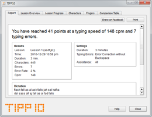
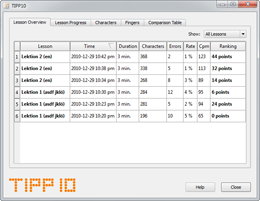
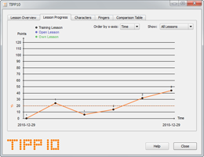
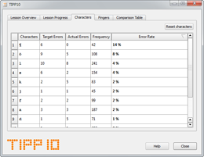
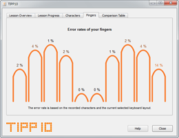
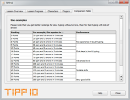

Getting started with a Lesson | Table of Contents | General Settings
Getting started with a Lesson | Table of Contents | General Settings
6.4 Results
The results are shown after a lesson has been completed either when the timer has finished or you have chosen an early exit and saved the results. You can also open this window directly from the home window of the typing tutor by going to the menu tab and clicking on Go and then Results.
Your results are shown on six tabs:
6.4.1 Report
After each lesson the first tab will show a report of the lesson that was just completed. This window is not available when accessing reports from the home window of the typing tutor.

The report gives you a progress overview of the lesson you have completed and includes report, number of errors and average typing speed (you will find detailed information about these individual items in the next chapter). The settings you have chosen are also listed next to the progress report. Beneath the report you will also find the last dictation performed with all typing errors marked in red and underscored.
If you want to print the report you can click on the Print button on the top right side. An input window will open. Enter you name if you want it to appear on the printout. You can also leave this space blank. Clicking on the Print button again will open the actual printing dialog where you can select a printer and begin printing.
You can also post your results on Facebook. To do this, click on the Share on Facebook button on the top right side.
6.4.2 Overview of Lessons
The Overview of Lessons tab shows a list of all completed lessons. The results of the last completed lesson appear at the top of the list.

The following information on each lesson is provided:
| Lesson: | Name of the Lesson |
| Time: | Starting time |
| Duration: | Duration in minutes |
| Characters: | Number of dictated characters |
| Errors: | Number of typing errors |
| Rate: | Error rate in percent (Errors / Characters) |
| Cpm: | Characters per minute (Strokes / Duration) |
| Score: | Score in points (((Strokes - (20 * Errors)) / Duration) * 0.4) |
The Score column calculates a score based on your typing speed and number of errors so that you can track your progress. Beginners usually start out with lower scores. Push yourself to improve your score!
Keep in mind that slower typing with fewer errors generates betters scores than fast typing with more errors.
There is a table with typical scores in chapter 6.4.6.
To the right above the lesson list there is a drop-down menu where you can filter the lessons by type (Training Lessons, Open Lessons and Own Lessons).
If you want to arrange the list by columns just click on the column heading. An arrow will tell you if the entries are being shown in ascending or descending order.
6.4.3 Progress of Lessons
Progress of Lessons will show you an evaluation of the lessons you have completed on a progress diagram. The x axis (vertical) shows the individual points and time is on the y axis (horizontal).

Training Lessons are shown with a black dot and the number above the dot is the lesson number. Open Lessons have a blue dot and Own Lessons are shown in green.
You can filter and arrange the progress diagram with the drop-down menu on the right. You can also position the cursor over a dot to display detailed information about that completed lesson.
The progress diagram won't be displayed until at least two lessons have been completed.
6.4.4 Characters
The Characters tab will show all characters that you have practiced in your lessons. The characters with the highest error rate percentages are the ones you are having the most trouble with.

The following information on each character is shown:
| Target Errors: | Number of target errors (character was supposed to be typed, but wasn't) |
| Actual Errors: | Number of actual errors (character was mistyped) |
| Frequency: | Number of times the character was shown |
| Error Rate: | Error rate in percent (Target Errors / Frequency) |
If you want to arrange the list by columns just click on the column heading. An arrow will tell you if the entries are being shown in ascending or descending order.
6.4.5 Fingers
The Fingers chart will show you your error rate per finger. The fingers with the highest error rates are causing you some troubles.

If you position your mouse over a finger the frequency and number of errors will appear in a small window.
The finger error rate is calculated using the recorded characters and the current selected keyboard layout.
6.4.6 Comparison Table
The Comparison Table tab shows you a table with general empirical values to give you an overview and allow you to compare them with your results.

 Getting started with a Lesson | Table of Contents | General Settings
Getting started with a Lesson | Table of Contents | General Settings
© 2006-2011 Tom Thielicke IT Solutions